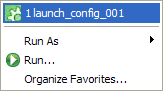
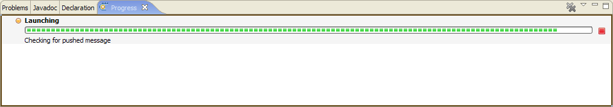
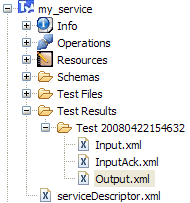

A service can be tested directly on the TOOLBOX RE in order to check its behaviour on a real environment. In order to do this a service must be deployed on the TOOLBOX RE (see here) and a launch configuration must be create (see here). Once performed these steps the user have to start an execution selecting the launch configuration from the run menu, as shown below.

The execution is started and the progress is shown by a bar in the "Progress" view as shown below. Through this bar it is possible to stop the execution on the TOOLBOX DE (on the TOOLBOX RE the instance must be stopped through its administration pages).

All messages exchanged between TOOLBOX DE and TOOLBOX RE are stored into the service project for offline inspection. For each execution a directory with the following name is created under <service>/Test Results/ :
The picture below describe what said.
